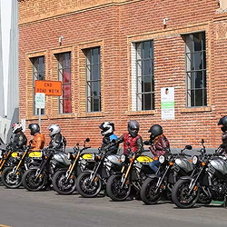
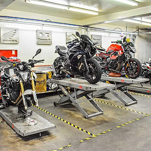

Rider Resources
Staging/Meeting Spots
Lake Murray Dam Parking
Google Maps LinkLimited/Paid parking during summer
CycleGear Columbia
Google Maps LinkBike night 2nd Tuesday every month 5PM–8PM
Quaker Steak & Lube
Google Maps LinkNo stunting/revving – they WILL ban you!
Stunt Lot
Google Maps LinkOnly available on weekends
Dreher Island
Google Maps LinkPoor surface condition on access road and lot
Buc-ees Florence
Google Maps LinkNo large meets – they WILL ban you!

Repair Shops
RestoMoto
Google Maps LinkBig Back’s Moto Shack
Google Maps LinkLucas Motorsports
Google Maps Link
